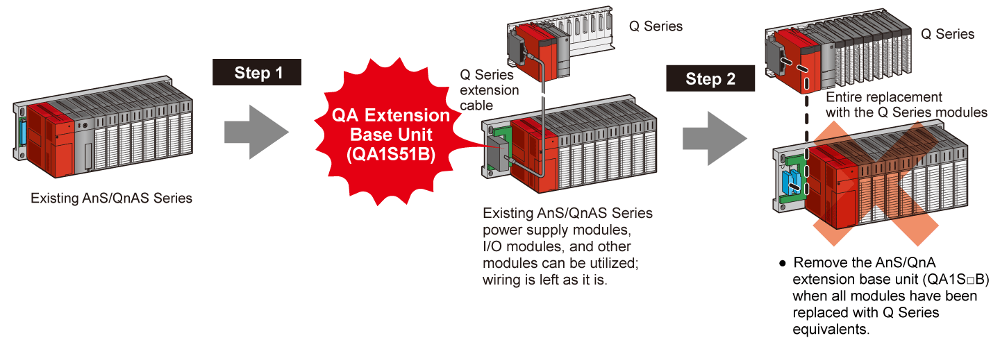

Programmable Controllers MELSEC-A Series Renewal

Replace with the Q Series CPU module while keeping the existing modules
QA Extension Base Unit (QA1S51B)
Supported series: 
Replace the AnS/QnAS Series CPU with the Q Series CPU while keeping the existing AnS/QnAS Series modules
Gradual transition from the AnS/QnAS Series to the Q Series (Q mode)
- Construct a system that is controlled by the new Q Series CPU (Q mode) while keeping the existing AnS/QnAS Series modules installed to a QA1S□B extension base unit. The AnS/QnAS Series modules can gradually be replaced to comprise a Q Series-only system at the end.

- The QA1S□B extension base units are compatible with the Universal model QCPUs*1 (including the High-speed Universal model QCPUs). Process CPUs, redundant CPUs, Safety CPUs and remote I/O Stations are not compatible.
- Some modules are not installable on the QA1S□B extension base unit. For details, please refer to the "QCPU User's Manual (Hardware Design, Maintenance and Inspection) (SH(NA)-080473ENG)".
- No further extensions can be made to QA1S51B because QA1S51B is not equipped with an extension cable connector.
*1.The Universal model QCPU of which first 5-digit serial number is 13102 or later, is compatible with the base units.
Reduce conversion effort by using the same I/O addresses
- When utilizing existing modules with a Q Series CPU, it is not required to change the I/O number of the existing modules. For new module(s) on the main base unit, assign a subsequent number, which comes after the existing module numbers in the I/O assignment settings. This can greatly reduce the program modification time.

Note:Assign the I/O numbers in the following order: Q Series to AnS/QnAS Series or AnS/QnAS Series to Q Series.
When the order is mixed (i.e., Q Series → AnS/QnAS Series → Q Series), an error will occur in the CPU.
Example of I/O assignment
| Model | Type | Point | Address | ||
|---|---|---|---|---|---|
| Main base unit |
0 | QJ61BT11N | Intelli. | 32 | 100 |
| 1 | QJ71LP21-25 | Intelli. | 32 | 120 | |
| 2 | QX41 | Input | 32 | 140 | |
| 3 | QX41 | Input | 32 | 160 | |
| 4 | QY41P | Output | 32 | 180 |
| Model | Type | Point | Address | ||
|---|---|---|---|---|---|
| Extension base unit |
5 | A1SX41 | Input | 32 | 00 |
| 6 | A1SY41P | Output | 32 | 20 | |
| 7 | - | Empty | 32 | 40 | |
| 8 | - | Empty | 32 | 60 | |
| 9 | A1SX41 | Input | 32 | 80 |